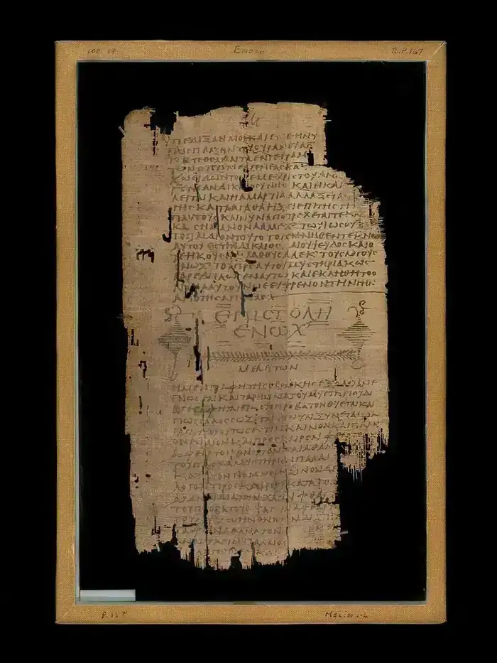
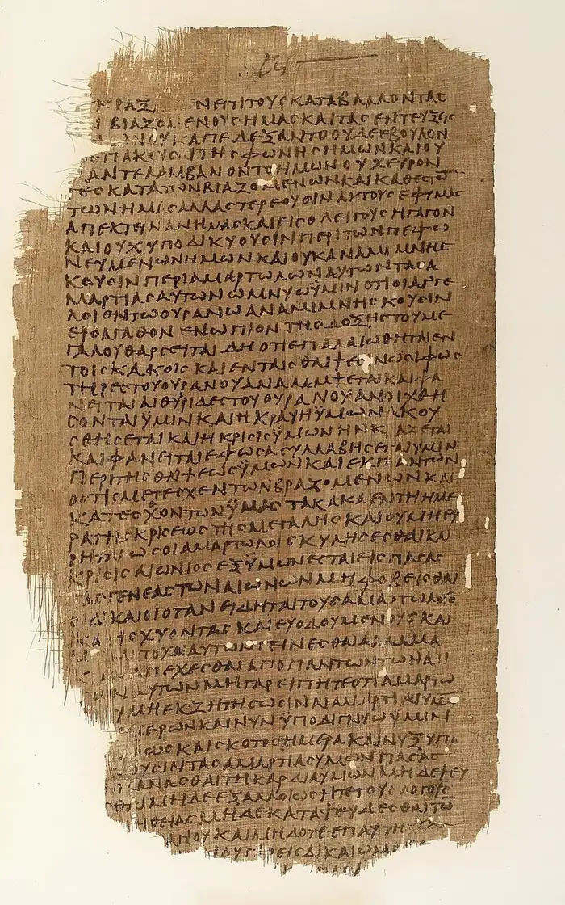

The text
1 Enoch is a collection of apocalyptic texts, composed over several centuries before the Common Era, and preserved complete only in Ge'ez, the liturgical language of Ethiopia. Its opening section, the Book of the Watchers, describes 200 angels who descend to earth, take human wives, teach forbidden arts — metallurgy, cosmetics, astrology, weapon-making — and father the giants called Nephilim.
Maps, diagrams and images




The reading
The text is in the genre of apocalyptic revelation: it explains the origin of evil, the corruption of the world and the coming judgement. The 'forbidden knowledge' motif is a theological statement about the boundaries between the human and the divine, not a report of a technology transfer.
The extraterrestrial reading treats the Watchers as visitors and their teachings as technology. It has to discard the genre, the demonology and the moral structure of the text to do so.
Documented: the text, its languages, its genre and its influence.
Documented: the Watchers tradition in Second Temple literature.
Not established: any historical event behind the narrative.
The error: reading apocalyptic symbolism as reportage.
The honest label: fringe — a real ancient text with a modern reading imposed on it.
Why it is in the archive
Because 1 Enoch is the single most-cited ancient text in the ancient-astronaut literature, and because the genre it belongs to is the answer.
Open resources on this topic
- BookThe Watchers of Enoch: The First Book of a Time-Reading Series — Robert Mihok · 2017 (Internet Archive, free to read)
- PapersOpen-access articles: DOAJ · PubMed Central · Internet Archive Scholar
- BooksPublic-domain and borrowable copies: Open Library · Project Gutenberg · Google Books
Cite this page
Momin, S. (2026). The Watchers of Enoch. The Larger World Archive. https://drsamonline.github.io/LARGE_GLOBE/watchers-enoch.htmlMomin, Sohil. “The Watchers of Enoch.” The Larger World Archive, 2026, https://drsamonline.github.io/LARGE_GLOBE/watchers-enoch.html.Momin, Sohil. “The Watchers of Enoch.” The Larger World Archive, 2026. https://drsamonline.github.io/LARGE_GLOBE/watchers-enoch.html.@misc{the2026watchers,
author = {Momin, Sohil},
title = {The Watchers of Enoch},
year = {2026},
howpublished = {The Larger World Archive},
url = {https://drsamonline.github.io/LARGE_GLOBE/watchers-enoch.html},
note = {Last reviewed 20 November 2026}
}Last reviewed 20 November 2026 · Corrections policy · this page is not peer reviewed
Sources for this page
- Wikipedia, “Book of Enoch” — the text and its contentsen.wikipedia.org
- Wikipedia, “Watcher (angel)” — the traditionen.wikipedia.org
- Wikipedia, “Apocalyptic literature” — the genreen.wikipedia.org
- Wikipedia, “Second Temple period” — the contexten.wikipedia.org